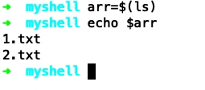

xhprof安装小记
xhprof安装步骤 https://github.com/longxinH/xhprof-apm/blob/php7/README_CN.md
1. 关闭opcache扩展
2. 增加php的内存限制到4GB
xgui安装步骤：https://github.com/perftools/xhgui
array {
[函数名]=>
array {
["ct"] => 调用次数 (int)
["wt"] => 函数方法执行的时间耗时 (int)
["cpu"] => 函数方法执行消耗的cpu时间 (int)
["mu"] => 函数方法所使用的内存 (int)
["pmu"] => 函数方法所使用的内存峰值 (int)
["files"] => array {
[文件名] =>
array {
[行号] => 调用次数 (int)
}
}
}
}
三分钟上手shell语言
if语句
if [ "$arg1" = "$arg2" ] && [ "$arg1" != "$arg3" ]
then
echo "arg1和arg2相等，arg1和arg3不相等"
exit 3
elif [ $arg1 = $arg2 ] && [ $arg1 = $arg3 ]
then
echo "arg1, arg2, arg3均相等"
exit 0
else
echo "arg1, arg2, arg3都不相等"
exit 4
fi
for 循环语句
for i in $(seq 1 10);
do
echo $i
done
arr=`seq 1 10`
for i in $arr
do
echo $i
done
while语句
# 初始化变量值为0
a=0
while [ $a -lt 10 ]
do
echo $a
a=`expr $a + 1`
done
case语句
# 初始化变量a
a=4
case "$a" in
"1")
echo "a等于1"
;;
"2" | "3")
echo "a等于2或3"
;;
*)
echo "a不等于1，2或3"
;;
esac
将一个命令的输出保存到变量
使用$(一个命令)就可以获取这个命令的输出了，然后可以把这个输出赋值给一个变量
比如把当前目录的文件保存到变量中
arr=$(ls)
操作效果如下

整数运算操作
使用双小括号的语法：$((运算内容))，返回运算后的结果，支持+, -, *, /, %, **, +=, -=, *=, /=, 自增，自减，进制转换等操作
i=1
b=$((i+1))
c=$((i=i+1))
d=$((i++))
e=$((++i))
echo $b # 2
echo $c # 2
echo $d # 2
echo $e # 4
处理换行
echo "aaa:bbb:ccc:ddd" | tr ":" "\n" | sed '/ccc/a\Chanpter 1'
一些注意的点
变量声明时不需要加$符号，但是使用时需要加，=左右不能存在空格

sed可做文件内容的字符串替换
awk可做文件内容输出的格式化
shell的操作符分数字和字符串，注意使用对应的操作符，文件也有对应的操作符，参考：http://www.tutorialspoint.com/unix/unix-basic-operators.htm
查看linux发行版: cat /etc/*release
查看进程树
pstree -p 进程的id
ps aft
参考资料
- https://www.cyberciti.biz/faq/unix-linux-bsd-appleosx-bash-assign-variable-command-output/
- https://stackoverflow.com/questions/49110/how-do-i-write-a-for-loop-in-bash
- https://stackoverflow.com/questions/2359270/using-if-elif-fi-in-shell-scripts
- https://stackoverflow.com/questions/37985926/unix-shell-script-while-loop
- http://www.tutorialspoint.com/unix/unix-basic-operators.htm
- https://stackoverflow.com/questions/5562253/switch-case-with-fallthrough
Copyright © 2015 Theme used GitHub CSS. 访问人/ 次